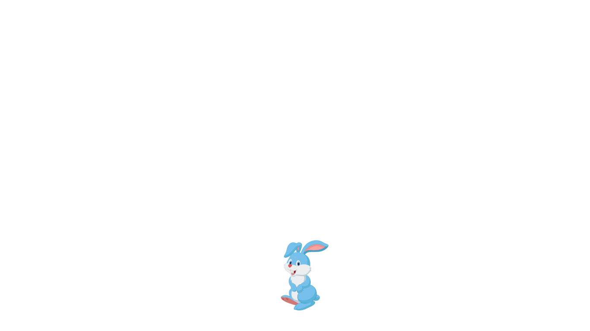
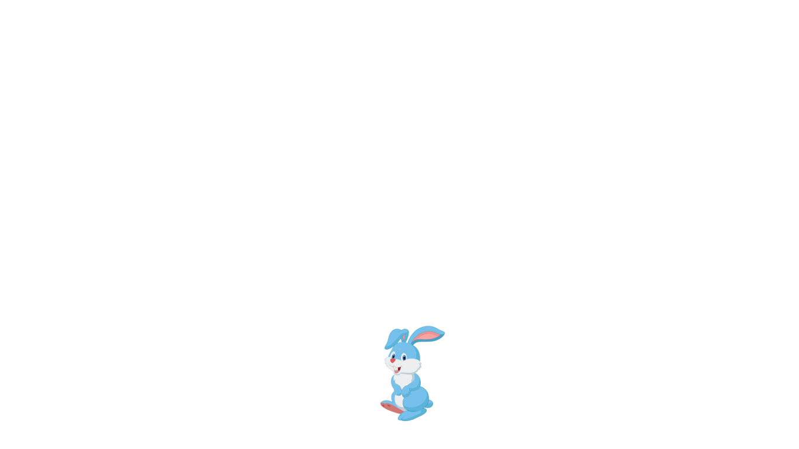
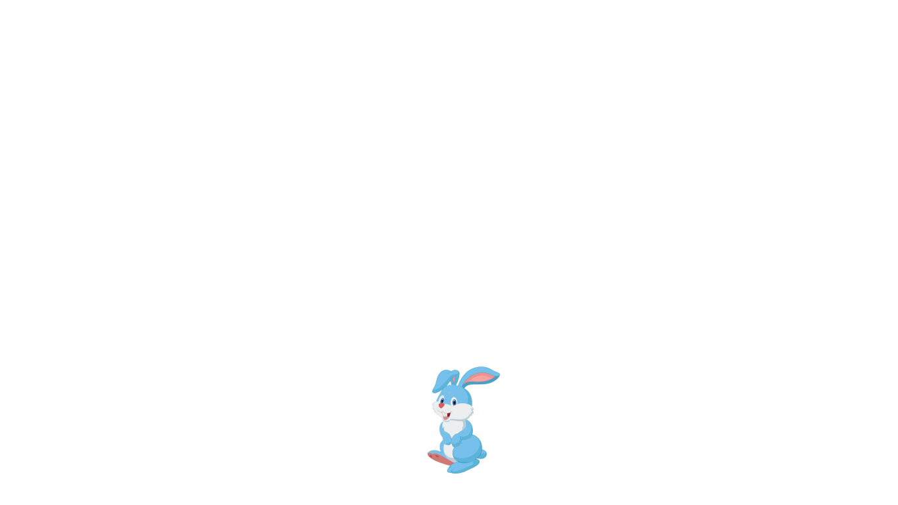
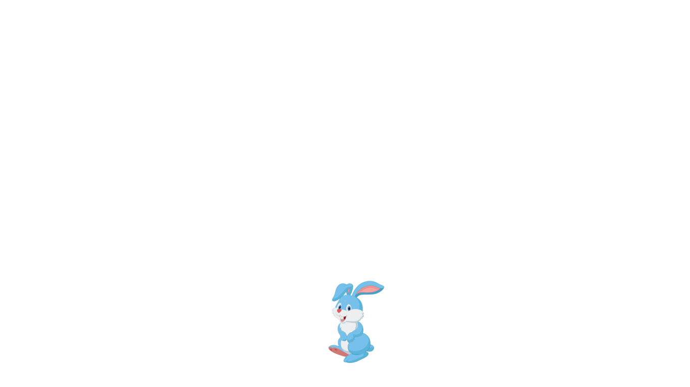

Kelinci dan Buaya


 

Di suatu pagi yang cerah, Kelinci yang lincah sedang berjalan-jalan di tepi sungai. Ia lapar dan melihat banyak makanan lezat di seberang sungai. Namun, ada satu masalah besar—sungai itu adalah rumah Buaya, yang terkenal kuat dan selalu mengintai mangsa di dalam air.
Kelinci tahu, jika ia mencoba menyeberang begitu saja, Buaya pasti akan menyergapnya. Tapi Kelinci bukanlah hewan sembarangan, ia cerdik dan selalu bisa menemukan jalan keluar dari masalah. Kelinci pun duduk sejenak di pinggir sungai, memikirkan cara untuk bisa menyeberang tanpa dimangsa.
Tak lama kemudian, sebuah ide cemerlang muncul di benaknya. Kelinci mendekati sungai dan berteriak memanggil Buaya, "Hai, Buaya! Apakah kau ada di sana?"
Buaya muncul ke permukaan, menampakkan giginya yang tajam, "Ada apa, Kelinci? Apa kau ingin menjadi makan siangku hari ini?"
Kelinci tersenyum tenang dan berkata, "Oh, tentu tidak! Aku datang untuk mengundang kalian semua ke pesta besar yang diadakan oleh Raja Hutan. Tapi, sebelum itu, aku harus memastikan apakah jumlah kalian cukup untuk ikut serta dalam pesta tersebut."
Buaya, yang merasa bangga dengan kekuatannya, menjadi penasaran. "Berapa banyak dari kami yang kau butuhkan untuk pesta itu?" tanya Buaya.
Kelinci menjawab, "Aku tidak tahu pasti. Itulah mengapa aku perlu kalian berbaris dari ujung sungai ini sampai ke seberang, supaya aku bisa menghitung kalian satu per satu. Setelah itu, aku akan melaporkannya kepada Raja."
Buaya setuju, merasa tidak curiga dengan maksud Kelinci. Dia lalu memanggil semua buaya di sungai untuk berbaris dari tepi sungai tempat Kelinci berdiri hingga ke tepi lainnya.
Dengan cepat, para buaya berbaris, membuat sebuah jembatan hidup. Kelinci melompat dari punggung satu buaya ke buaya lainnya, sambil menghitung dengan lantang, "Satu, dua, tiga..." hingga akhirnya Kelinci sampai di seberang sungai.
Setelah sampai di tepi seberang, Kelinci melompat ke daratan dan tertawa, "Terima kasih, Buaya! Sekarang aku bisa menyeberang dengan aman!" Buaya hanya bisa menggeram kesal, menyadari bahwa mereka baru saja tertipu.
Kelinci yang cerdik berhasil menyeberang sungai tanpa dimangsa, berkat kecerdasannya. Ia melanjutkan perjalanannya mencari makanan dengan perasaan puas, sementara Buaya belajar sebuah pelajaran penting: jangan pernah meremehkan kecerdikan.